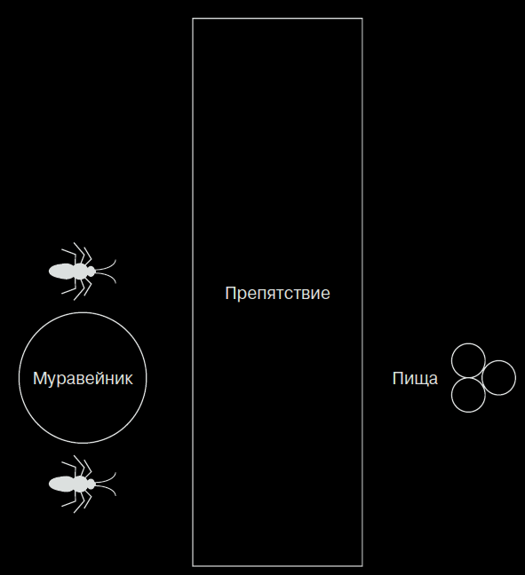
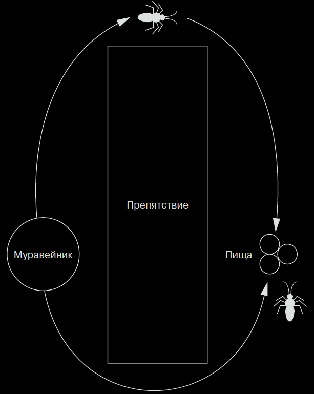
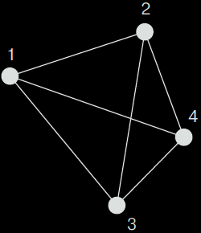
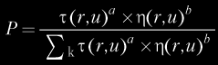
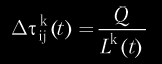
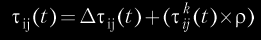
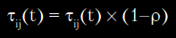
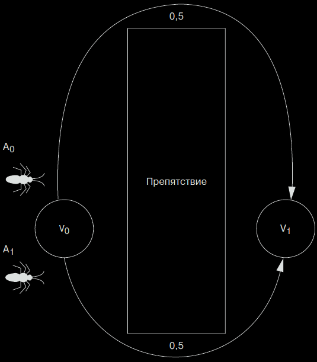
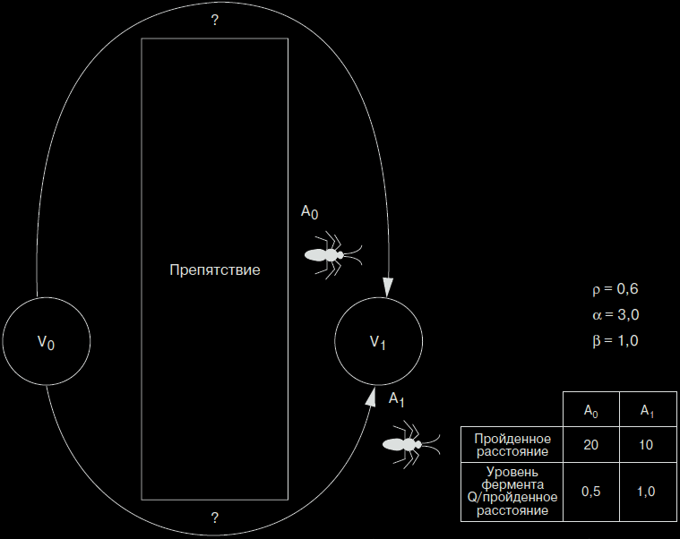

Алгоритмы муравья (Ant algorithms), или оптимизация по принципу муравьиной колонии (это название было придумано изобретателем алгоритма, Марко Дориго (Marco Dorigo)), обладают специфическими свойствами, присущими муравьям, и используют их для ориентации в физическом пространстве. Природа предлагает различные методики для оптимизации некоторых процессов. Алгоритмы муравья особенно интересны потому, что их можно использовать для решения не только статичных, но и динамических проблем, например, проблем маршрутизации в меняющихся сетях.
Естественная мотивация
Хотя муравьи и слепы, они умеют перемещаться по сложной местности, находить пищу на большом расстоянии от муравейника и успешно возвращаться домой. Выделяя ферменты во время перемещения, муравьи изменяют окружающую среду, обеспечивают коммуникацию, а также отыскивают обратный путь в муравейник.
Самое удивительное в данном процессе – это то, что муравьи умеют находить самый оптимальный путь между муравейником и внешними точками. Чем больше муравьев используют один и тот же путь, тем выше концентрация ферментов на этом пути. Чем ближе внешняя точка к муравейнику, тем больше раз к ней перемещались муравьи. Что касается более удаленной точки, то ее муравьи достигают реже, поэтому по дороге к ней они применяют более сильные ферменты. Чем выше концентрация ферментов на пути, тем предпочтительнее он для муравьев по сравнению с другими доступными. Так муравьиная «логика» позволяет выбирать более короткий путь между конечными точками.
Алгоритмы муравья интересны, поскольку отражают ряд специфических свойств, присущих самим муравьям. Муравьи легко вступают в сотрудничество и работают вместе для достижения общей цели. Алгоритмы муравья работают так же, как муравьи. Это выражается в том, что смоделированные муравьи совместно решают проблему и помогают другим муравьям в дальнейшей оптимизации решения.
Рассмотрим пример, представленный на рис. 1. Два муравья из муравейника должны добраться до пищи, которая находится за препятствием. Во время перемещения каждый муравей выделяет немного фермента, используя его в качестве маркера.

Рисунок 1
При прочих равных каждый муравей выберет свой путь. Первый муравей выбирает верхний путь, а второй – нижний. Так как нижний путь в два раза короче верхнего, второй муравей достигнет цели за время T1. Первый муравей в этот момент пройдет только половину пути (рис. 2).
Когда один муравей достигает пищи, он берет один из объектов и возвращается к муравейнику по тому же пути. За время T2 второй муравей вернулся в муравейник с пищей, а первый муравей достиг пищи (рис. 3).
Вспомните, что при перемещении каждого муравья на пути остается немного фермента. Для первого муравья за время T0–T2 путь был покрыт ферментом только один раз. В то же самое время второй муравей покрыл путь ферментом дважды. За время T4 первый муравей вернулся в муравейник, а второй муравей уже успел еще раз сходить к еде и вернуться. При этом концентрация фермента на нижнем пути будет в два раза выше, чем на верхнем. Поэтому первый муравей в следующий раз выберет нижний путь, поскольку там концентрация фермента выше.

Рисунок 2
В этом и состоит базовая идея алгоритма муравья – оптимизация путем непрямой связи между автономными агентами.
Алгоритм муравья
Подробно рассмотрим алгоритм муравья, чтобы понять, как он работает при решении конкретной проблемы.
Предположим, что окружающая среда для муравьев представляет собой закрытую двумерную сеть. Вспомните, что сеть – это группа узлов, соединенных посредством граней. Каждая грань имеет вес, который мы обозначим как расстояние между двумя узлами, соединенными ею. Граф двунаправленный, поэтому муравей может путешествовать по грани в любом направлении (рис. 4).

Рисунок 3

Рисунок 4
Муравей
Муравей – это программный агент, который является членом большой колонии и используется для решения какой-либо проблемы. Муравей снабжается набором простых правил, которые позволяют ему выбирать путь в графе. Он поддерживает список табу (tabu list), то есть список узлов, которые он уже посетил. Таким образом, муравей должен проходить через каждый узел только один раз. Путь между двумя узлами графа, по которому муравей посетил каждый узел только один раз, называется путем Гамильтона (Hamiltonian path), по имени математика сэра Уильяма Гамильтона (Sir William Hamilton).
Узлы в списке «текущего путешествия» располагаются в том порядке, в котором муравей посещал их. Позже список используется для определения протяженности пути между узлами.
Настоящий муравей во время перемещения по пути будет оставлять за собой фермент. В алгоритме муравья агент оставляет фермент на гранях сети после завершения путешествия. О том, как это происходит, рассказывается в разделе «Путешествие муравья».
После создания популяция муравьев поровну распределяется по узлам сети. Необходимо равное разделение муравьев между узлами, чтобы все узлы имели одинаковые шансы стать отправной точкой. Если все муравьи начнут движение из одной точки, это будет означать, что данная точка является оптимальной для старта, а на самом деле мы этого не знаем.
Движение муравья основывается на одном и очень простом вероятностном уравнении. Если муравей еще не закончил путь (path), то есть не посетил все узлы сети, для определения следующей грани пути используется уравнение 1:
 (1)
Здесь t(r,u) – интенсивность фермента на грани между узлами r и u, t(r,u) – функция, которая представляет измерение обратного расстояния для грани, a – вес фермента, а b – коэффициент эвристики. Параметры a и b определяют относительную значимость двух параметров, а также их влияние на уравнение. Вспомните, что муравей путешествует только по узлам, которые еще не были посещены (как указано списком табу). Поэтому вероятность рассчитывается только для граней, которые ведут к еще не посещенным узлам. Переменная k представляет грани, которые еще не были посещены.
Пройденный муравьем путь отображается, когда муравей посетит все узлы диаграммы. Обратите внимание, что циклы запрещены, поскольку в алгоритм включен список табу. После завершения длина пути может быть подсчитана – она равна
сумме всех граней, по которым путешествовал муравей. Уравнение 2 показывает количество фермента, который был оставлен на каждой грани пути для муравья k. Переменная Q является константой.
 (2)
Результат уравнения является средством измерения пути, – короткий путь характеризуется высокой концентрацией фермента, а более длинный путь – более низкой. Затем полученный результат используется в уравнении 3, чтобы увеличить количество фермента вдоль каждой грани, пройденного муравьем пути.
 (3)
Обратите внимание, что данное уравнение применяется ко всему пути, при этом каждая грань помечается ферментом пропорционально длине пути. Поэтому следует дождаться, пока муравей закончит путешествие и только потом обновить уровни фермента, в противном случае истинная длина пути останется неизвестной. Константа r – значение между 0 и 1.
В начале пути у каждой грани есть шанс быть выбранной. Чтобы постепенно удалить грани, которые входят в худшие пути в сети, ко всем граням применяется процедура испарения фермента (Pheromone evaporation). Используя константу r из уравнения 3, мы получаем уравнение 4.
 (4)
Поэтому для испарения фермента используется обратный коэффициент обновления пути.
После того как путь муравья завершен, грани обновлены в соответствии с длиной пути и произошло испарение фермента на всех гранях, алгоритм запускается повторно. Список табу очищается, и длина пути обнуляется. Муравьям разрешается перемещаться по сети, основывая выбор грани на уравнении 1
Этот процесс может выполняться для постоянного количества путей или до момента, когда на протяжении нескольких запусков не было отмечено повторных изменений. Затем определяется лучший путь, который и является решением.
Давайте разберем функционирование алгоритма на простом примере, чтобы увидеть, как работают уравнения. Вспомните (рис. 1) простой сценарий с двумя муравьями, которые выбирают два разных пути для достижения одной цели. На рис. 5 показан этот пример с двумя гранями между двумя узлами (V0 и V1). Каждая грань инициализируется и имеет одинаковые шансы на то, чтобы быть выбранной

Рисунок 5
Два муравья находятся в узле V0 и помечаются как A0 и A1. Так как вероятность выбора любого пути одинакова, в этом цикле мы проигнорируем уравнение выбора пути. На рис. 6 каждый муравей выбирает свой путь (муравей A0 идет по верхнему пути, а муравей A1 – по нижнему).
В таблице на рис. 6 показано, что муравей A0 сделал 20 шагов, а муравей A1 – только 10. По уравнению 2 мы рассчитываем количество фермента, которое должно быть «нанесено».
Далее по уравнению 3 рассчитывается количество фермента, которое будет применено. Для муравья A0 результат составляет:
= 0,1 + (0,5 ´ 0,6) = 0,4.

Рисунок 6
Для муравья A1 результат составляет:
= 0,1 + (1,0 ´ 0,6) = 0,7.
Далее с помощью уравнения 4 определяется, какая часть фермента испарится и, соответственно, сколько останется. Результаты (для каждого пути) составляют:
= 0,4 ´ (1,0 – 0,6) = 0,16
= 0,7 ´ (1,0 – 0,6) = 0,28.
Эти значения представляют новое количество фермента для каждого пути (верхнего и нижнего, соответственно). Теперь переместим муравьев обратно в узел V0 и воспользуемся вероятностным уравнением выбора пути 1, чтобы определить, какой путь должны выбрать муравьи.
Вероятность того, что муравей выберет верхний путь (представленный количеством фермента 0,16), составляет:
(0,16)3,0 ´ (0,5)1,0 / ((0,16)3,0 ´ (0,5)1,0) + ((0,28)3,0 ´ (1,0)1,0) = 0,002048 / 0,024 = P(0,085).
Вероятность того, что муравей выберет нижний путь (представленный количеством фермента 0,28), составляет:
(0,28)3,0 ´ (1,0)1,0 / ((0,16)3,0 ´ (0,5)1,0) + ((0,28)3,0 ´ (1,0)1,0) = 0,021952 / 0,024 = P(0,915).
При сопоставлении двух вероятностей оба муравья выберут нижний путь, который является наиболее оптимальным.
Пример задачи
В качестве примера рассмотрим задачу коммивояжера (Traveling Salesman Problem – TSP). Она заключается в том, чтобы найти кратчайший путь между городами, при котором каждый город будет посещен всего один раз. То есть надо найти кратчайший Гамильтонов путь в графе, где в качестве узлов выступают города, а в каче стве граней – соединяющие их дороги. Математики впервые изучили задачу TSP в 1930_е гг., в частности, ею занимался Карл Менгер (Karl Menger) в Вене. Следует отметить, что похожие задачи исследовались еще в 19 в. ирландским математиком сэром Уильямом Роуэном Гамильтоном (Sir William Rowan Hamilton)